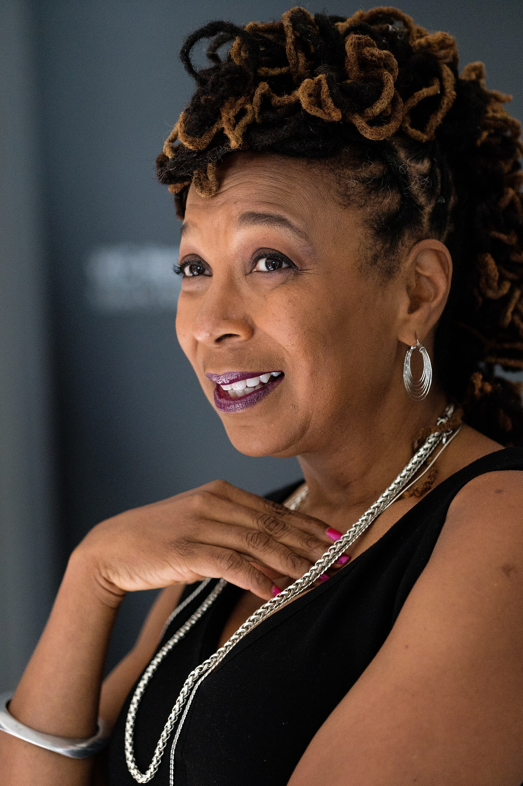
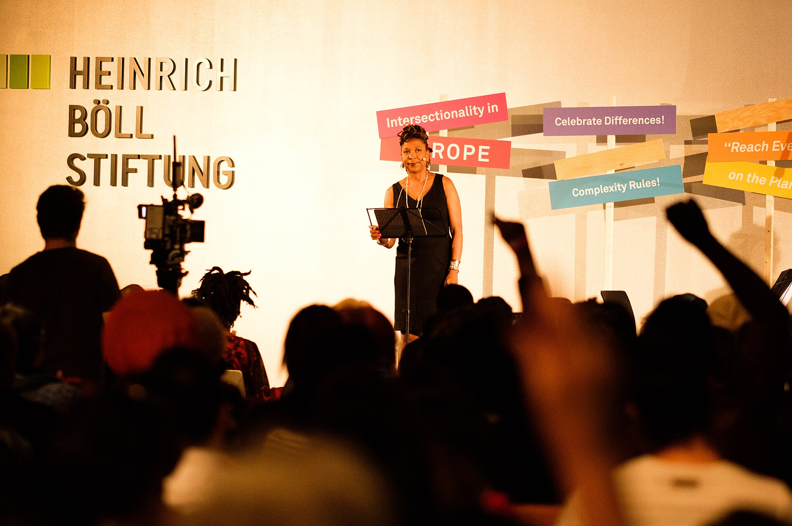
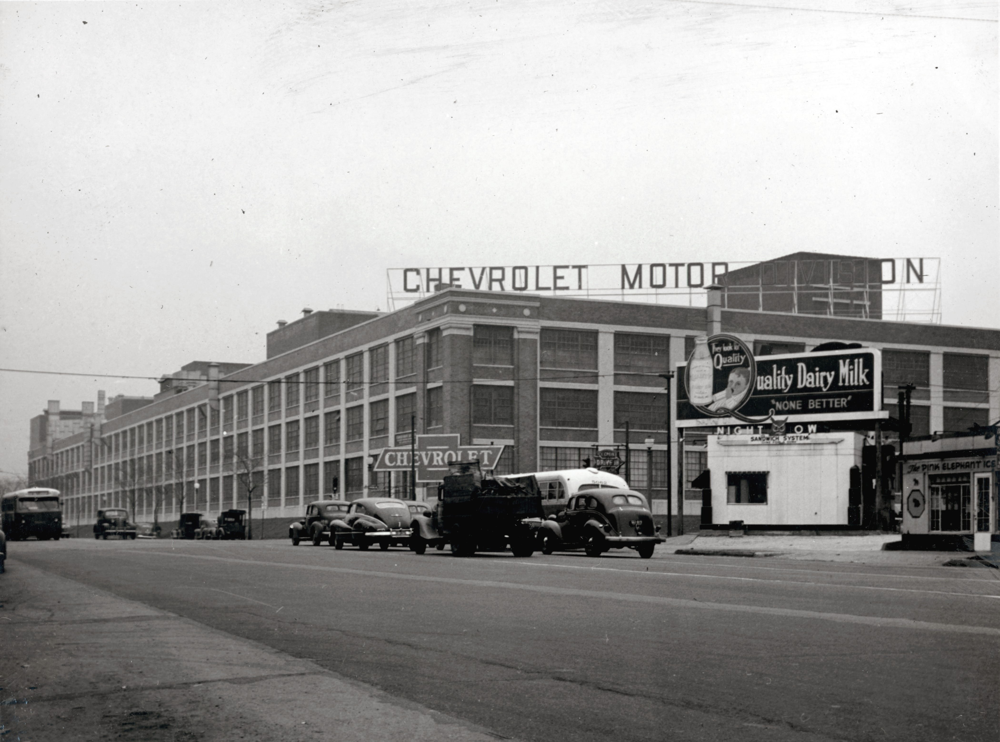
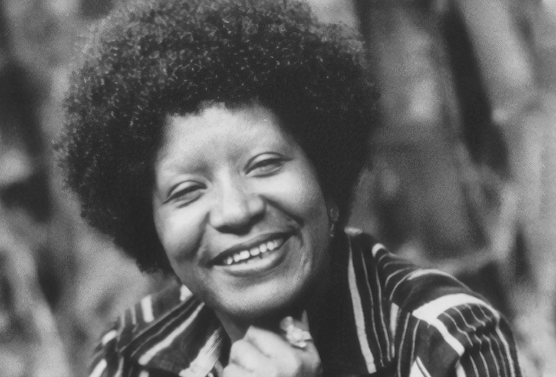
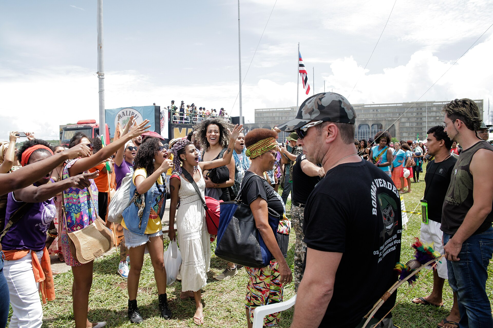
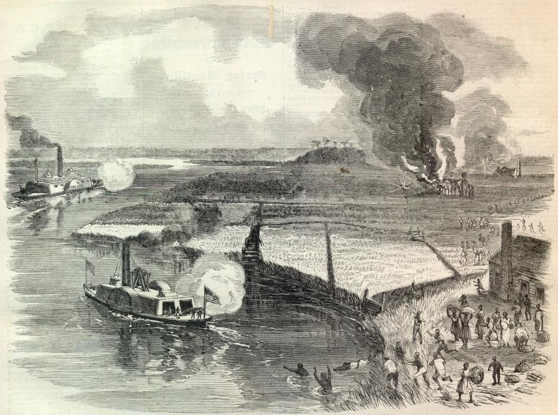

Monday · Feminism
: ’s legal word for a harm the rules kept missing
What means as a concrete legal and political argument — not a slogan — then ’s 1989 essay, the , Moore, and Payne cases, and how Black feminist organizing already named interlocking oppression before the term.

.jpg){kind=link}
This lesson treats as a named legal and political tool with a dated origin, not as a vague personality type or online insult. The core argument follows ’s 1989 essay and the district-court records she cites, especially (E.D. Mo. 1976). The traffic-intersection analogy appears because used it; this lesson states it as her teaching device and then stays with the hiring and layoff facts. Precursors — (1977), , , and earlier Black women writers — are named so the word does not erase the older analysis. Photographs of 1970s shop floors and of the plaintiffs are largely still in copyright; the plant exterior and related public-domain or free-licensed images stand in for place and institution, not for the plaintiffs’ faces. Elsewhere is Brazil in the same decades, not a paired “Asia chapter.”
Select any words, or tap a dotted term.
- 1863 Combahee River Raid 2 June 1863: guided Union gunboats up the River in South Carolina. About 750 enslaved people were freed. The 1970s Boston collective took its name from this raid.
- 1964 Title VII 2 July 1964: President signed the . banned employment discrimination based on race, color, religion, sex, and national origin. Courts later treated those categories as separate axes.
- 1976 DeGraffenreid v. , 413 F. Supp. 142 (E.D. Mo. 1976). Five Black women challenged ’s seniority layoffs. The court refused a combined race-and-sex claim.
- 1977 Combahee Statement April 1977: the published its Statement. It described racial, sexual, heterosexual, and class oppression as interlocking, and rejected ranking one liberation above another.
- 1981–82 All the Women Are White… , , and edited (1982). The title named the same erasure later mapped in doctrine.
- 1989 Demarginalizing published “” in the . The word entered legal scholarship.
- 1991 Mapping the Margins published “” in the , extending the analysis beyond employment into rape and domestic violence.
- 2015 Marcha das Mulheres Negras 18 November 2015: tens of thousands of Black women marched on Brasília. Brazilian Black feminist organizing had its own vocabulary; the march made the scale visible nationally.
Before
The word came late; the problem was already in the file
This archive already has four Feminism capsules numbered as waves. First Wave ends around the vote. Second Wave runs through the Equal Rights Amendment’s failed deadline and includes the of April 1977. Third Wave opens with in 1991 and gives ’s essays a few careful paragraphs. Fourth Wave follows hashtags and street marches in the 2010s. Those lessons mention . They do not stop long enough to watch a court refuse a claim, or to read how the refusal was written.
is not a fifth wave. It is a tool for seeing what wave stories and single-issue statutes keep dropping. In U.S. employment law after 1964, race discrimination and sex discrimination were written as separate grounds. A plaintiff who was harmed as a Black woman could find that each separate test was satisfied by someone else’s body: the company hired Black men, so race looked fine; it hired white women, so sex looked fine; the people at the overlap still lost the jobs. ’s 1989 essay gave that failure a name and walked through the cases. Black feminist organizers had already described interlocking oppression in print. The legal word arrived afterward.

{kind=link}
Hold two dates next to each other. April 1977: publishes a Statement that refuses to rank race liberation against sex liberation. 1989: publishes “” in the . Twelve years apart. Same structural complaint, different genres — a movement document and a law-review argument. This lesson stays with the legal argument long enough to see the mechanism, then looks sideways to Brazil in the same decades, where was building a different vocabulary for race and gender under a different state.
The concept
What intersectionality is for
, in ’s usage, is a way to describe how systems of power can combine so that the person standing at the join is not merely “doubly” burdened in an additive sense. The point is structural: institutions, doctrines, and movements often design their remedies around a prototype person who has one disadvantage and otherwise fits the dominant pattern. Remedies built for that prototype can miss the person who never fit it.
In antidiscrimination law, the prototype for “race plaintiff” tended to be a Black man. The prototype for “sex plaintiff” tended to be a white woman. A Black woman’s complaint could fail both prototypes at once. called this a : analysis that treats race and sex as mutually exclusive categories of experience. Under that framework, the most accurate description of the harm — discrimination against Black women as Black women — sounded to the court like an improper request for a special subcategory.
illustrated the idea with a traffic intersection. Discrimination, she wrote, can travel along a race road and a sex road; a collision at the join is not always assignable to one road alone. That picture is hers, from 1989, and it is a teaching device. The evidence that matters is not the metaphor. It is the hiring log, the layoff list, and the judicial sentence that forbids combining the statutes.
What the concept is not: a scorecard of identities, a rule that the most marginalized person always wins an argument, or a synonym for “diversity.” Used carefully, it asks a narrower question. Which harms become invisible when our categories and our organizations are built as if people have only one politically relevant axis at a time?

.jpg){kind=link}
The cases
DeGraffenreid, Moore, Payne — and the sentence about a “super-remedy”
In v. , decided in 1976 by the U.S. District Court for the Eastern District of Missouri, five Black women sued . Their workplace was the company’s St. Louis assembly operation. The complaint was about hiring history and about layoffs under a . Evidence summarized in the litigation and later by showed a stark pattern: had not hired Black women before 1964. After 1970, Black women were hired into the plant. When recession layoffs came, the seniority rule — — pushed those same Black women out.

._3809_Union_Boulevard.jpg){kind=link}
The plaintiffs tried to sue as Black women — as people harmed by the combination of race and sex discrimination. The district court refused that framing. Judge’s language, quoted by and still readable in the opinion: plaintiffs had cited no decision treating Black women as a special class; they should not “combine statutory remedies to create a new ‘’” beyond what the drafters intended. The lawsuit, the court said, must be examined as race discrimination, or sex discrimination, or either — “but not a combination of both.”
Once the claim was split, each half could be made to fail. On sex: had hired women for years before 1964 — white women. So a pure sex-discrimination story about historical exclusion looked weak, because “women” as a category appeared in the workforce. On race and seniority: courts often upheld systems unless plaintiffs could show the system perpetuated illegal discrimination in a way the doctrine already recognized. Black men had been in the plant. The people missing from the older workforce, and then missing again after the layoff, were Black women. The tests had somewhere else to look.
pairs with two other matters. In , a Black woman’s effort to represent a broader class of women ran into judicial skepticism that she could represent white women’s sex-discrimination claims. In , Black women plaintiffs faced limits on representing Black employees generally, because courts worried their sex claims might diverge from Black men’s interests. Read together, the pattern is ugly and clear. Black women were too different from white women to stand in for “women,” and too different from Black men to stand in for “Blacks,” yet not different enough to be recognized as their own protected class when they asked for that recognition directly.
“” is the essay that walks through these cases and then turns the same lens on feminist theory and antiracist politics. ’s charge is not only that courts failed. It is that movements can reproduce the same design: a feminism that centers white women’s experience as “women’s,” and an antiracism that centers Black men’s experience as “Black,” each leaving Black women to argue for admission into someone else’s prototype.
.jpg){kind=link}
Before the word
Combahee, Beale, King, Collins — the analysis without Crenshaw’s noun
If you only learn the 1989 coinage, you will misdate the insight. In April 1977 the — Black feminists in Boston, among them , , and — published “.” They wrote that they were committed to struggling against racial, sexual, heterosexual, and class oppression, and that the synthesis of those oppressions created the conditions of their lives. They refused to choose which liberation line to stand in. That is interlocking oppression stated in movement prose.
They named themselves after ’s June 1863 , when Union boats moved upriver in South Carolina and hundreds of enslaved people reached freedom. The name was a historical claim about Black women’s leadership, not a decorative place-name.
Still earlier, ’s “” (around 1969–1970) described compounded race and sex pressures on Black women inside and outside movement organizations. In 1988, the year before , sociologist published “, Multiple Consciousness,” arguing that race, gender, and class interact rather than simply stack. In 1990 published Black Feminist Thought and developed the “” as a map of how intersecting oppressions are organized across domains of power. Different disciplines, overlapping problem.
In 1982 , , and edited the anthology . The title is a diagnosis you can hang next to . When “women” defaults to white and “Blacks” defaults to men, the remainder is not a rounding error. It is a structural absence.
{kind=link}
Elsewhere
Brazil was not waiting for a Chicago law-forum noun
While U.S. courts were splitting claims and was writing , Brazilian intellectual (1935–1994) was elaborating — a concept for African diasporic life in the Americas that insisted on race, gender, and the afterlife of slavery and colonialism together. Gonzalez worked as an anthropologist, activist, and public thinker under and after Brazil’s military dictatorship. Her vocabulary is not a translation of . It answers a Brazilian racial order, a Portuguese-language public sphere, and a different legal history. Put her next to as a contemporary, not as a derivative.

{kind=link}
On 18 November 2015, decades after Gonzalez’s main essays, tens of thousands of Black women marched on Brasília in the . The march’s scale belongs to a Brazilian Black feminist continuum — organizations, writers, and electoral politics that had been building for years. It is a useful later image of public force. It is not proof that Brazil “received” from the United States. The analytical work was already local.

.jpg){kind=link}
After
The word escapes the law review
In 1991 published “” in the . The essay takes into rape law, domestic-violence shelters, and . Shelters and police practices designed around a default white woman’s path through the system could fail women of color at every step — language access, immigration fear, community policing relationships, stereotypes about who is a “real” victim. Again the mechanism is institutional design around a prototype.
Through the 1990s and 2000s the word moved into sociology, public health, education, and activist speech. co-founded the . The campaign pressed a simple archival point: public mourning for police violence often knew how to say men’s names and went quiet on women’s. Her 2016 TEDWomen talk, “,” turns that silence into a live demonstration with an audience.
Widening use brought caricature. By the late 2010s “” could mean, in a newspaper column or a comment thread, almost anything about identity. That drift is real. It does not erase the 1976 court opinion, the 1977 Statement, or the 1989 essay. When the word gets mushy, the cure is to go back to the layoff list and the sentence about a .
Inside this Capsules archive, the practical payoff is reading discipline. When a Feminism lesson says “women,” ask which women the evidence actually shows. When a race lesson says “Black,” ask whether Black women are in the frame or only in a footnote. is one trained habit for noticing the join before the story moves on.
A question
A question to keep asking
When a rule, a movement, or a syllabus is built around a , who has to disappear for the categories to stay neat — and what would the filing, the march, or the reading list look like if that person were treated as the central case instead of the exception?
Fun fact
The collective’s name is a Civil War military operation

{kind=link}
The did not invent a poetic river name. On 2 June 1863 guided Union gunboats up the River in the South Carolina Lowcountry. Soldiers of the 2nd South Carolina Volunteer Infantry, many of them formerly enslaved, took part. Roughly 750 people were freed in that raid. Tubman is the only woman known to have led a U.S. military operation during the Civil War. When Black feminists in Boston chose the name in the 1970s, they were pointing at that history of Black women’s leadership under fire, not at a metaphor.